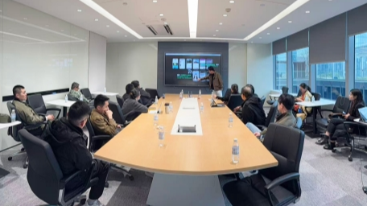
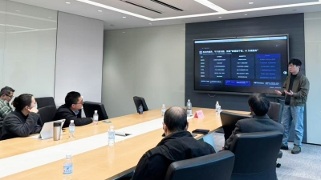
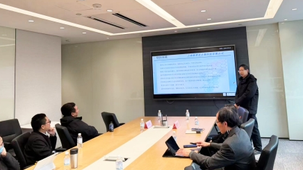
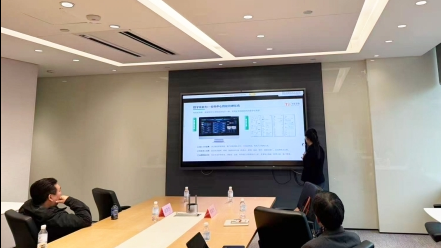
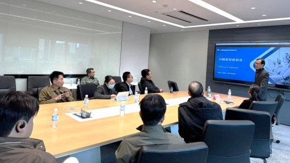
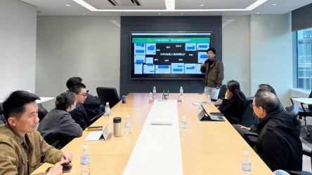

春回大地，万物竞发。2026年3月26日，在年味散去、复工热潮全面涌动的时刻，上海虹桥国际中央商务区恒生云谷国际创新中心迎来了新年过后的第 一场创投盛事——第23期“恒创中国”投融资路演。

作为年后复工的首场活动，现场热度远超预期。来自全国各地的顶 尖创业者和长三角地区的资深投资人们齐聚一堂，用激情与智慧点燃了乙巳蛇年的第 一把“创投之火”。现场座无虚席，气氛热烈，不仅彰显了开年即“狂飙”的创业热情，更见证了“恒创中国”作为优质项目“超级联系人”的独特魅力。
本次活动汇聚了五个极具含金量的高精尖项目，覆盖了人工智能底层应用、生物医药、绿色循环经济、智能制造以及新兴陪伴经济等热门赛道。项目方们带来了详实的商业计划与落地成果，与在场资方展开了深度的交流与碰撞。
Bitbook：Agent时代的“长期记忆”
随着AI Agent的普及，个人数据的价值被重新定义。Bitbook定位为“私人语音笔记与长期记忆系统”，主打本地优先与隐私安全。它不仅仅是一个会议纪要工具，更是将高价值语音（会议、访谈、电话）沉淀为结构化、可检索、可供AI调用的个人知识库。在路演现场，该项目提出的“让沉默知识产生复利”的理念，引发了投资人对数据主权与AI底层基础设施的深度思考。

隆霁美生物：破解靶向衰老的密码
在生物医药领域，上海隆霁美生物科技有限公司带来了前沿的抗衰老药物研发项目。公司聚焦靶向衰老细胞，展示了在Senolytics（抗衰剂）和Senomorphics（抗衰细胞调节剂）领域的研究成果，包括FOXO4-DRI抗衰肽分子及AI辅助的化合物筛选。项目深厚的科研背景和明确的创新靶点，吸引了现场多家专注医疗健康赛道的资方目光，双方就临床转化与商业化路径展开了热烈讨论。

飞宝互联：可信数据重构再生资源
作为绿色经济的代表，飞宝互联直面再生资源行业“小散乱”、税收合规难、融资难的痛点。通过“数字技术+产业运营”双轮驱动，平台打通了交易、存证、支付与供应链金融的全链条，实现了“四流合一”。项目展示的合规化公转私解决方案及智能分拣中心管理系统，让在场资方看到了传统产业数字化转型的巨大空间。项目方透露，2025年营收已超17亿，正加速向千亿级数据要素平台迈进。

與道信息：AI赋能机器人员工走进工厂
面对智能制造的大潮，上海與道信息技术有限公司展示了其独特的“超自动化平台”。与常规的流程机器人不同，與道专注于处理场景长、逻辑复杂的业务，通过“数字员工机器人家族”帮助新能源、汽配、能源等行业实现跨部门、跨系统的业务流程协同。团队强大的产研背景（阿里、IBM、清华等）和已经在多家头部企业落地的案例，让资方对其技术壁垒和商业化能力给予了高度评价。

玩+：陪伴经济，让旅行更有温度
作为唯 一 一个面向C端新消费的项目，“玩+”切中了当下城市人群“精神孤独”的痛点。项目定位“陪伴旅行开创者”，通过“AI数字人互动+真人陪伴”的模式，致力于规范陪伴经济这一蓝海市场。项目已在泰山景区完成MVP验证，并构建了从AI获客到达人成长的全链路体系。其独特的“互联网+文旅+AI”三重基因，让在场资方看到了情绪价值变现的无限可能。

在自由交流环节，现场气氛达到了高潮。资方代表们纷纷就项目的技术壁垒、获客成本、营收模型及股权架构等核心问题与项目方进行了“一对一”的深入沟通。
活动结束后，主办方恒生云谷收到了来自项目方与资方的广泛好评。作为恒生云谷倾力打造的品牌活动，“恒创中国”投融资路演始终致力于挖掘优质产业项目，搭建项目与资本之间最 高效的沟通桥梁。
在“新质生产力”被不断强调的当下，恒生云谷依托虹桥国际中央商务区的区位优势，持续为创业者提供展示舞台，为投资人发掘潜力独角兽。第23期活动的成功举办，不仅为2026年的创投市场开了个好头，更印证了“恒创中国”这一品牌在赋能实体经济、推动产业升级中的坚实力量。
春种一粒粟，秋收万颗子。期待在“恒创中国”的舞台上，涌现出更多改变未来的创新力量！